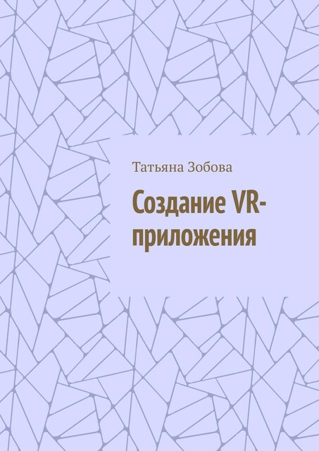

"Создание VR-приложения"

Аннотация
Это руководство для создания VR-игр. Оно включает пошаговые инструкции по разработке игры, а также подробные объяснения языка программирования C#. Книга подойдет как для начинающих, так и для тех, кто уже имеет опыт работы со средой разработки. Она поможет освоить основы создания VR-игр и даст необходимые знания и инструменты для начала разработки собственных проектов.
Оглавление
- Глава 1. Виртуальная реальность
- 1.1 Что такое VR?
- 1.2 Какие VR-устройства есть на рынке и как они работают?
- 1.3 Как идет разработка VR-проектов и кто в этом участвует?
- Глава 2. Ознакомление с платформой Unity и ее возможностями для создания VR-приложений
- Глава 3. Основы программирования на C#
- 3.1 Основные принципы программирования на C#
- 3.1.1 Синтаксис
- 3.1.2 Управляющие конструкции
- 3.1.3 Типы данных
- 3.1.4 Массивы: C#
- 3.1.5 Функции и методы
- 3.1.6 Объектно-ориентированное программирование (ООП)
- Инкапсуляция
- Наследование
- Полиморфизм
- Абстракция
- 3.1.7 Библиотеки и фреймворки
- 3.1.8 Делегаты, события и лямбды
- 3.1.9 Интерфейсы
- 3.1.10 Стек и Куча
- 3.1.11 Сборщик мусора в C#
- 3.1.12 Архитектура приложений
- 3.1.13 MVC & MVP
- 3.1.14 DRY, KISS, SOLID, YAGNI
- 3.1.15 Однопоточность и Многопоточность
- 3.1.16 Коллекции
- 3.1.17 JSON
- 3.1.18 Асинхронное программирование в C#
- 3.1.19 Корутины
- 3.1.20 Разница между WaitForSeconds и Task.Delay ()
- 3.1 Основные принципы программирования на C#
- Глава 4. Знакомство с интерфейсом Unity
- 4.1 Основные элементы интерфейса Unity
- 4.2 Основные инструменты и панели в Unity
- Глава 5. Установка и использование программного обеспечения
- 5.1 Установка Unity
- 5.2 Создание C# Script
- 5.3 Добавление объектов на сцену
- 5.4 Создание сцены
- Глава 6. Создание VR приложения
- 6.1 Создание окружения
- 6.2 Добавление крана и кабины
- 6.3 Структурирование папок проекта
- 6.4 Архитектура Vr приложения
- 6.5 Создание C# Scrips
- 6.5.1 CameraController
- 6.5.2 CraneManager
- 6.5.3 MountController
- 6.5.4 Cargo
- 6.5.5 HookController
- 6.5.6 Добавление на сцену
- Глава 7. Итого